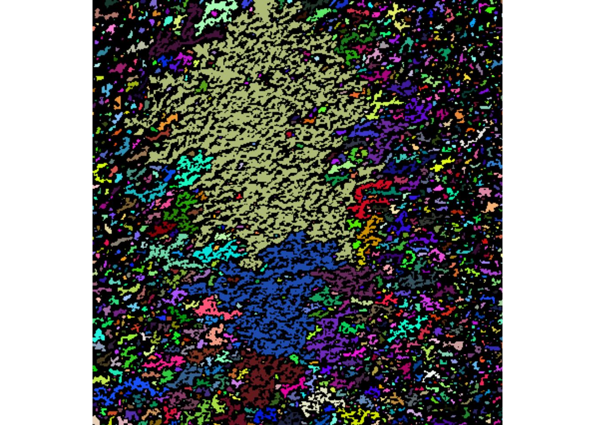
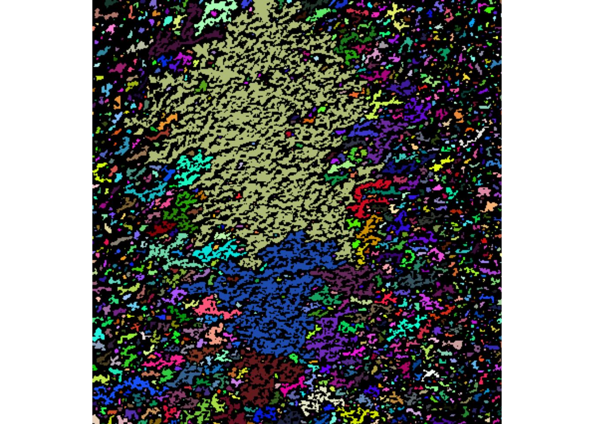
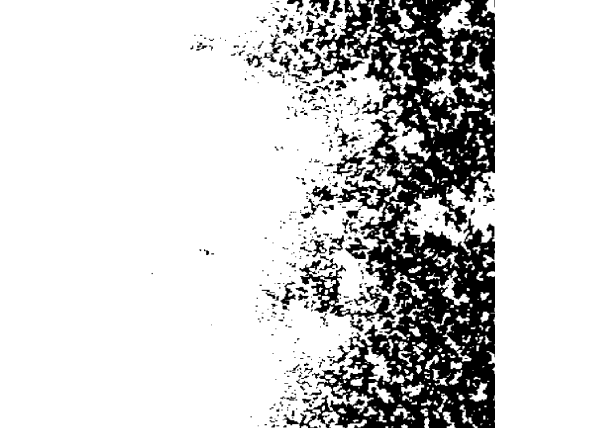
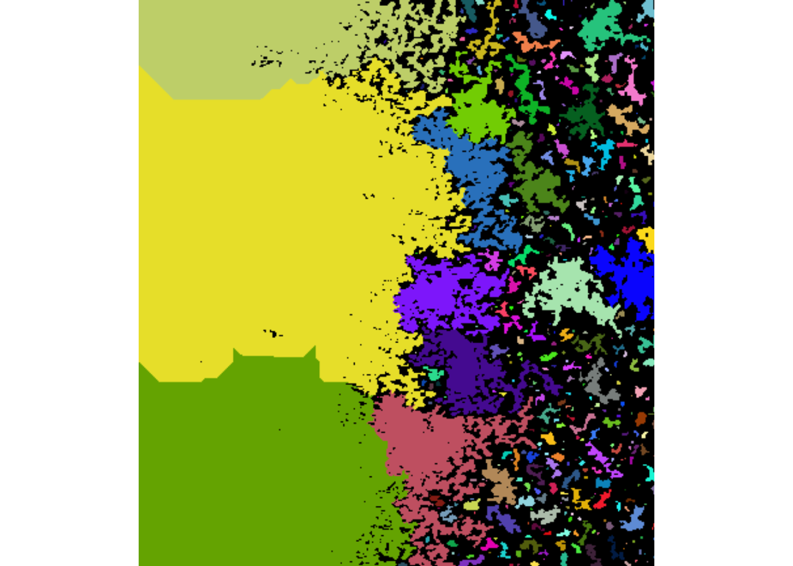
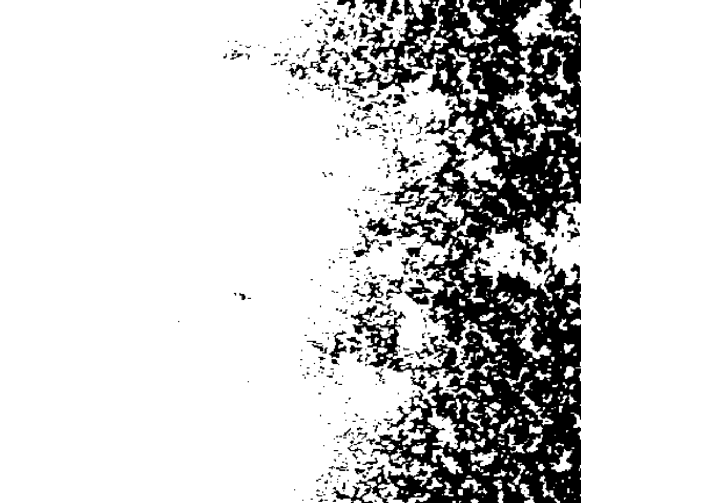
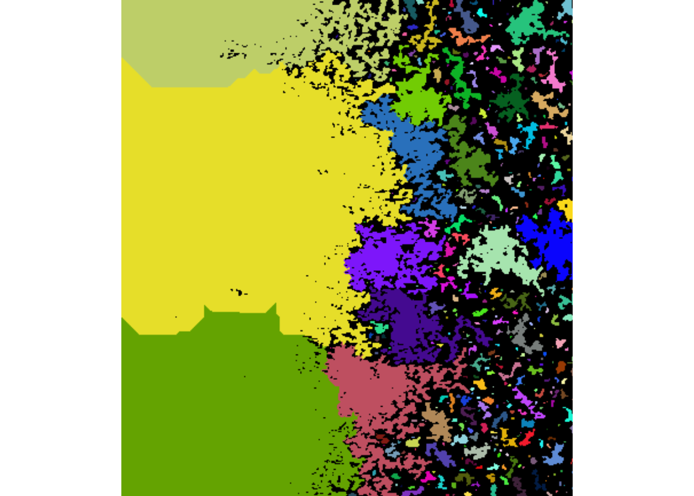

4 Image analysis
Image analysis is een techniek in R om afbeelding te analyseren op veel verschillende dingen. In dit gedeelte ga ik kijken op welke manieren afbeeldingen geanalyseerd kunnen worden, wat het verschil is tussen de manieren en ga ik fluorescentie afbeeldingen analyseren. Dit omdat ik deze techniek ook ga gebruiken op mijn stage.
4.1 Afbeelding analyseren d.m.v. EBImage
Er zijn verschillende manieren waarmee afbeeldingen geanalyseerd kunnen worden met R. Met de EBImage package kunnen afbeeldingen worden geanalyseerd, ook op basis van pixels.
Tijdens dit voorbeeld wordt er gekeken naar het verschil tussen S. gordonii die een uur en twee uur geïncubeerd is in een welletje van een 24 wells plaat. De eerste stap is om de afbeelding in te laden.
## Image
## colorMode : Color
## storage.mode : double
## dim : 411 426 3
## frames.total : 3
## frames.render: 1
##
## imageData(object)[1:5,1:6,1]
## [,1] [,2] [,3] [,4] [,5] [,6]
## [1,] 0.6980392 0.7098039 0.7215686 0.7450980 0.7725490 0.7725490
## [2,] 0.7725490 0.7490196 0.7411765 0.7568627 0.7607843 0.7294118
## [3,] 0.7372549 0.7411765 0.7490196 0.7607843 0.7490196 0.7333333
## [4,] 0.7215686 0.7607843 0.7686275 0.7294118 0.7019608 0.7254902
## [5,] 0.7450980 0.7568627 0.7372549 0.6862745 0.6705882 0.7215686
Om het verschil tussen de pixels goed te kunnen zien wordt de afbeelding zwart en wit gemaakt. Hierbij hebben de pixels een waarde van 0 of 1.
 

Nu is het interessant om te kijken of er een groot verschil is in cellen bij een incubatie van 1 uur versus een incubatie van 2 uur.
 

## [1] 469Er zijn dus bij een incubatie van 2 uur meer cellen dan bij 1 uur met een verschil van 1,1 procent.